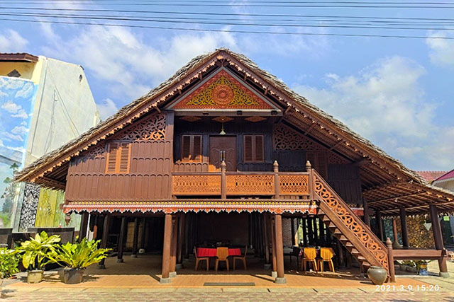

Kabupaten Bireuen dalam catatan sejarah dikenal sebagai daerah Jeumpa. Dahulu Jeumpa merupakan sebuah kerajaan kecil di Aceh. Menurut Ibrahim Abduh dalam Ikhtisar Radja Jeumpa, Kerajaan Jeumpa terletak di Desa Blang Seupeung, Kecamatan Jeumpa, Kabupaten Bireuen. Kerajaan-kerjaan kecil di Aceh tempo dulu termasuk Jeumpa mengalami pasang surut. Apalagi setelah kehadiran Portugis ke Malaka pada tahun 1511 M yang disusul dengan kedatangan Belanda. Secara de facto Belanda menguasai Aceh pada tahun 1904, yaitu ketika Belanda dapat menduduki benteng Kuta Glee di Batee Iliek, di bagian barat Kabupaten Bireuen. Kemudian dengan Surat Keputusan Vander Guevernement General Van Nederland Indie tanggal 7 September 1934, Aceh dibagi menjadi enam Afdeeling (kabupaten) yang dipimpin oleh seorang Asisten Residen. Salah satunya adalah Afdeeling Noord Kust van Aceh (Kabupaten Aceh Utara) yang dibagi dalam tiga Onder Afdeeling (kewedanan).
Kantor Bupati
 ...
...
Museum
 ...Meuligo
 ...
...
Simpang Kota